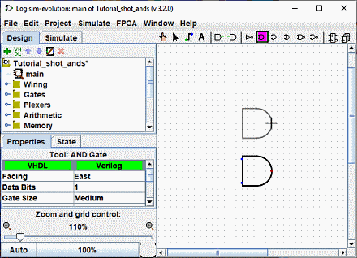

上一步: 第0步：整体概览
第1步：添加门
回想一下，我们正在尝试在 Logisim-evolution 中构建以下电路。

首先通过放置逻辑门来始构建电路，然后用导线将它们连接起来。第一件事是我们需要添加两个与门。在工具栏( , 列出的倒数第二个工具)上点击 "AND" . 然后在画布区域中单击您想要第一个与门所在的位置。 一定要为左边的东西留出足够的空间。 然后再次单击AND门并将第二个AND门放置在其下方。
, 列出的倒数第二个工具)上点击 "AND" . 然后在画布区域中单击您想要第一个与门所在的位置。 一定要为左边的东西留出足够的空间。 然后再次单击AND门并将第二个AND门放置在其下方。

注意与门左侧的四个点。 这些是可以连接导线的地方. 碰巧我们只使用其中两个用于我们的异或电路； 但对于其他电路，您可能会发现将两根以上的电线连接到与门是有用的。 输入的数量可以通过选中该门，然后在属性表窗口中修改 "输入数量"
现在添加其它的门. 首先点击 "OR" 门 ( ); 然后在画布上点击一个你想放置的位置. 然后再放置两个 "NOT" 门 (
); 然后在画布上点击一个你想放置的位置. 然后再放置两个 "NOT" 门 ( ).
).

在非门和与门之间我们留了一点空间； 不过，如果您愿意，可以将它们相互靠在一起放置，这样就可以省去稍后用导线连接它们的麻烦。
现在我们要将两个输入 x 和 y 添加到图中。选择 "Input" 工具 ( ), 并把他放在再画布上. 你应该使用"Output" 工具放在或门右侧作为输出 (
), 并把他放在再画布上. 你应该使用"Output" 工具放在或门右侧作为输出 ( ). (同样，我在“或”门和输出引脚之间留了一些空间，但您可以选择将它们放置在一起。)
). (同样，我在“或”门和输出引脚之间留了一些空间，但您可以选择将它们放置在一起。)

如果您不喜欢一些元件放置的位置，你可以通过使用 "Edit" 工具 ( ) 并将其拖放到你想要的位置. 或者你可以直接将其进行删除，通过 | Edit | → | Delete | 或者通过 电脑键盘上的 Delete 键 或者是通过 Ctrl-X 键.
) 并将其拖放到你想要的位置. 或者你可以直接将其进行删除，通过 | Edit | → | Delete | 或者通过 电脑键盘上的 Delete 键 或者是通过 Ctrl-X 键.
当您放置电路的每个元件时，您会注意到，一旦放置了元件，Logisim-evolution就会自动恢复到"Edit" 工具( ) 以便您可以移动最近放置的组件或（正如我们 很快就会看到）通过创建导线将组件连接到其他组件。 如果您想添加最近放置的组件的副本，快捷方式是按 Ctrl-D 复制所选内容。 （有些计算机使用其他键控制，例如在苹果电脑上要通过Command-D键来实现快捷复制。）
) 以便您可以移动最近放置的组件或（正如我们 很快就会看到）通过创建导线将组件连接到其他组件。 如果您想添加最近放置的组件的副本，快捷方式是按 Ctrl-D 复制所选内容。 （有些计算机使用其他键控制，例如在苹果电脑上要通过Command-D键来实现快捷复制。）
下一步: 第2步：添加导线